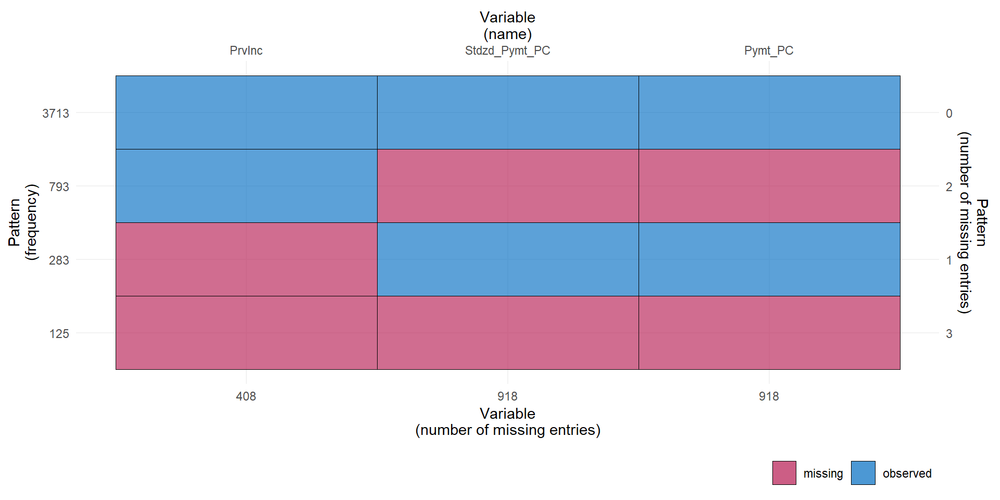
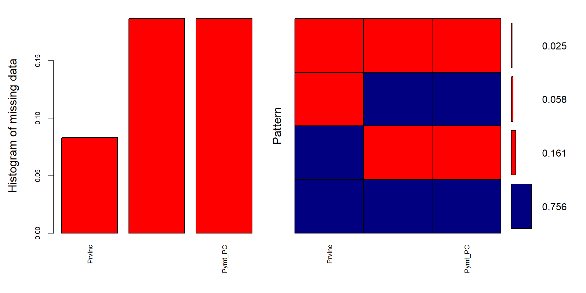
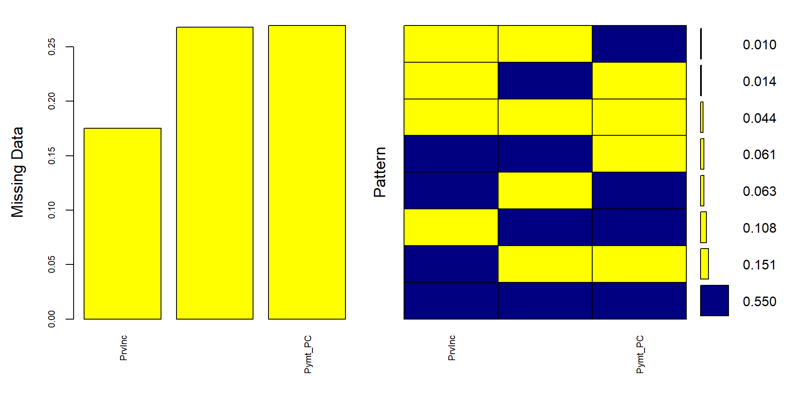
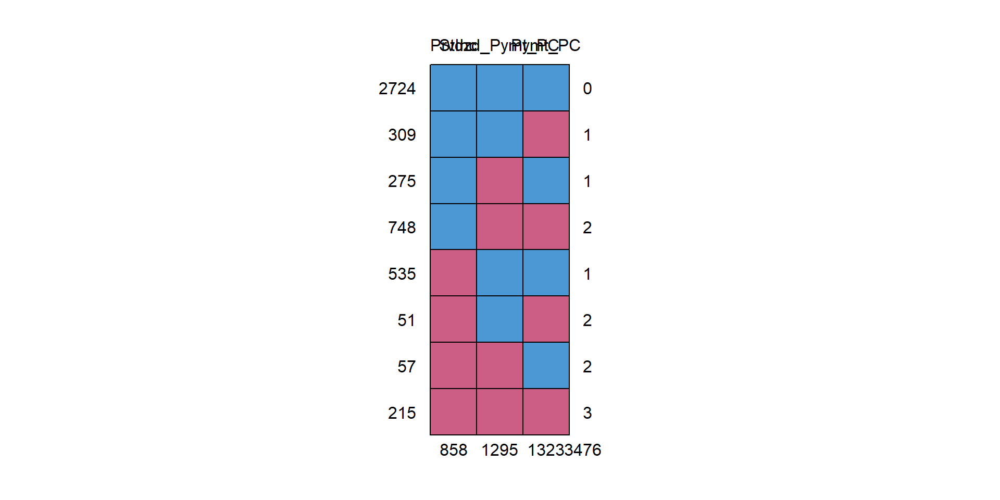

Missing data is ubiquitous in any dataset. Although alone it is not a problem, missing data becomes a problem when its analysis shows bias or lacks power. While the occurrence of missing data is immense, its discussion in many peer-reviewed journal articles is not so. Even more infrequent are the discussions on how best to accurately institute observations in the missing dataset. Some researchers [@ljlmw14] have observed that, there are areas of loss when it comes to missing data – bias, power, and recoverability.
Missing data in experiments and analyses can lead to inaccurately distributed data and calculations, skewed visuals (such as histograms, line graphs, etc.), and allow for inaccurate conclusions to be rendered. Determining which method is best is another challenge entirely. The problem of missing data in research applications is vast. There is a significant need to best correct the missing data points in order to provide the most accurate and complete dataset from which to analyze the research and draw accurate conclusions. Researchers suggest using the most common form of missing data analysis, Multiple Imputation (MI), in addition to other novel suggested approaches.
MI resolves the issue of “too small or too big” standard errors gathered from using traditional methods of addressing missing data. A large standard error occurs when statistical results are acquired with a lack of precision, whereas a small standard error occurs when statistical results are acquired with an overestimation of precision.
As Madley-Dowd et al.[-@mhth19] have noted, providing sufficient auxiliary variables can alleviate power degradation from missing data. They determined that standard error increased when the fraction of missing information (FMI) increased, while FMI decreased when auxiliary variables increased.
There has also been discussion of using machine learning to address missing data[@emmsmt21]. Using machine learning, additional imputation methods to alleviate missing data include K Nearest Neighbor (KNN) and Support Vector Machine(SVM). KNN measures distances for each missing value and pulls the replacement value from the smallest distances. KNN still performs well even with large amounts of missing data, and in iterative versions, it has been shown to converge faster than many other methods, yet with a high computation time. SVM is similar, but rather than weighting each distance as with KMM, it aims to create a hyperplane that has the largest distance to data points. It should be noted that the KNN method outperformed the experiment’s implementation of a random forest decision tree for small missingness ratios.
Many researchers argue that single imputation methods should be used only in randomized trials[@awlb21].
Throughout the topic research, a common theme has emerged. Missing data is categorized into either one of three types: Missing Completely at Random, Missing at Random, and or Missing Not at Random.
Kang[-@k13] introduces us to the three types of missing data as initially proposed by Rubin[@r76]. This research was expanded upon [@pmckppp17] to discuss the thorough estimation value of using MI in data analysis along with providing the three-step method. Pedersen et al. conclude the results of using MI are similar to using complete datasets thereby enhancing the credibility of the method’s robustness.
Missing Completely at Random (MCAR) refers to the probability that missing data is either not related to a specific value that is supposed to be obtained or to the set of obtained values. The data can also be missing due to equipment failure, samples lost in transit, or unsatisfactory samples[@k13]. MCAR data are unbiased and therefore an advantage due to its estimated parameters being objective and undeterred because of missing data. As a result, MCAR is the best-case option for missing data in an experiment.
Missing at Random (MAR) refers to the probability that missing responses are dependent upon the set of observed responses, but not related to the specific values expected to be obtained given the history of the obtained variable prior to the experiment. This is the most realistic option for missing data. When Missing at Random (MAR) occurs, the missing data is knowable and missingness is predictable, therefore, estimates can be determined; bias can be “recovered”[@k13].
Missing Not at Random (MNAR) refers to any case of missing data that cannot be classified as either Missing Completely at Random or Missing at Random. When Missing Not at Random (MNAR) occurs, no bias is observed, only power is affected resulting in standard error (SE) around the estimates being larger due to reduced sample size. MNAR is the least desirable scenario of missing data. The only way to accurately obtain an unbiased observation of the data is to model the data and use the model to incorporate it into a more complex model to estimate the values[@k13]. When Missing Not at Random (MNAR) occurs, the subjects affect the variables. Subjects do not want to disclose accurate information for fear or shame, and therefore forego providing a data point altogether[@ljlmw14].
Kang attempts to provide solutions to fill in the missing data points[@k13]. His research suggests the best solution to missing data is to be proactive to prevent it. When prevention fails to eliminate missing data, Kang offers several data analysis solutions to make the data more robust. The most common solution is complete case analysis, also stated as listwise analysis, with the aim to eliminate the missing data records altogether and analyze only the remaining whole data records.
Meanwhile, Lee et al.[-@ltclbghc21] deem the method beneficial for some use cases, but not sufficient for most analyses. They introduce Treatment and Reporting of Missing data in Observational Studies (TARMOS), a novel framework alternative to MI. TARMOS’s aim is to provide transparency and limit redundancies in substituted data. The framework notes the importance of using auxiliary variables to gather information from incomplete observations.
In addition to using MI, Little, et al. recommended using full-information maximum likelihood to mitigate the issues of missing data[@ljlmw14]. Using the three discussed planned missing data designs - multiform questionnaire protocol, two-method planned missing design, and wave-missing longitudinal design – the user is able to better understand how to overcome missing data issues.
It is essential to have quality datasets to avoid corrupted machine learning models. A derivative of MI is the Multivariate Imputation by Chained Equation (MICE) algorithm which assumes data is Missing at Random (MAR). The process uses multiple imputation methods to provide better results by considering the uncertainty of missing data.
Khan and Hoque [-@kh20] provide an alternative to MICE. Known as SICE, the new method improves upon the already existing Multivariate Imputation by Chained Equation (MICE) algorithm (found as a package in R), split into two variations to impute both categorical and numerical data. The method improves missing data by creating a hybrid of single and multiple imputation techniques. Using the respective variant, SICE-Categorical and SICE-Numeric, of the Single Center Imputation from Multiple Chained Equation (SICE) algorithm, the missing data values are corrected using a thorough approach to closely find a more accurate value to use instead. The approach uses predicted values imputed by using the MI approach to compute a mean or mode for the imputed values(depending on the data type), and replacing the original imputed value with the respective central measure. An added feature of using SICE in R is that it often had the lowest computation time for its data sets.
Two main techniques of imputation exist – traditional and modern[@oap18]. The traditional technique - single imputation, deletion, and mean imputation may be obsolete. However, Hot or Cold deck imputation (replacing missing data using similar data sets), and Regression imputation (replacing missing data with points along a regression) - may prove useful with many datasets. Furthermore, single imputation may lead to biased results and underestimation of error or variability.
Dataset: 21 specific chronic illnesses of Medicare beneficiaries, from U.S. Department of Health & Human Services [@CMMS].
Goal: Fill in missing data (2244 missing entries, about 5%)
Approach: Imputation using 3 approaches: Predictive Means Matching, Classification and Regression Trees, Lasso Regression, and Random Forest
1) Select independent variables that may help impute variables with missing data
2) Noting the chosen statistical method, estimate in each of the imputed datasets the association of interest
3) Combine using Rubin’s rules the association measures from each imputed dataset. To combine, we use the following equations
\[ W=\frac{\sum({SE_t}^2)}{m} \tag{1} \]
\[ B=\frac{\sum(\hat{\theta_t}-\bar{\theta})^2}{m-1} \tag{2} \]
\[ SE=\sqrt{W+B+\frac{B}{m}} \tag{3} \]
hot deck method
easy to use
handles any data type
Realistic
Hard to use for small data sets or ones with large FMI
For each missing variable, \(x\) , we impute using parameters \(\alpha\) and covariates \(z\) . We use \(h\) as a subscript for data containing \(x\) and \(j\) for data without. PMM choses a random donor from \(x_h\) such that the distance defined below is minimized.
\[ \delta_{hj}=\alpha^{mis}z_j-\alpha^{obs}z_h \tag{4} \]
Machine Learning
Robust
Flexible
Straightforward(in R)
In practice works similarly to PMM with tree instead of regression
Uses CART and Rubin’s rules automatically to yield a single dataset
Does not account for uncertainty and increases P values
Usually similar to average of all predictions from the CART models
Better predictions and accuracy than a single CART model
Minimizes regression coefficient (good for high multicollinearity)
Best for high dimension datasets
Preserves relationships between variables best
May add bias
Removes some predictor variables(easier to use)
Coefficients \(\hat{\beta_0}\) and \(\hat{\beta}^{lasso}\) are estimated by
\[(\hat{\beta_0}, \hat{\beta}^{lasso}) =argmin[\sum(Y_i-(\beta_0+\beta X^T_i))^2+\lambda \sum |\beta_j|] \tag5\]
where Y and X are the outcome and predictors respectively. λ is a non-negative tuning parameter that controls the amount of shrinkage, with increased shrinkage for higher λ values [@MZPRG14].
Prior to implementing the MICE method, we ran a missing map to get a count of which rows and columns contain missing data and how many data points are missing. As the following table and figures will show most of the columns contain their complete data set. We do, however, have three columns – Provisional Income, Total Medicare Standardized Payment, and Total Medicare Payment. Provisional Income has 408 missing entries, and both payment columns have missing values in 918 rows each. In our data set we have 2244 missing data points total between these columns.
## reading data file from github
Chronic_Conditions <- read_excel("Chronic_Conditions.xlsx")
#Calculate pattern of missing data
Chronic_Conditions <- Chronic_Conditions %>%
select( PrvInc , Stdzd_Pymt_PC, Pymt_PC)
## Display table of missing entries per variable(complete columns were omitted)
plot_pattern(Chronic_Conditions)
Figure 3: Missing Map

Figure 4: Histogram
We can see that over 75% of the data has been recorded but between those columns we are missing roughly 25% of our data which we will utilize the MICE package to impute.
Following the Missing Map, we ran the MICE package in R.
Results:
# Imputes missing data using the three selected methods
mice_imputed <- data.frame(
original = Chronic_Conditions$PrvInc,
imputed_pmm = complete(mice(Chronic_Conditions, method = "pmm", printFlag = FALSE))$PrvInc,
imputed_cart = complete(mice(Chronic_Conditions, method = "cart", printFlag = FALSE))$PrvInc,
imputed_lasso = complete(mice(Chronic_Conditions, method = "lasso.norm", printFlag = FALSE))$PrvInc)
#head(mice_imputed)
#Imputation using miss Forest
Chronic_Conditions.mis <- prodNA(Chronic_Conditions, noNA = 0.1)After running the MICE package, we ran a MICE plot to gain a better visual of our missing data.
# Plots missing data percentages per variable
aggr(Chronic_Conditions.mis, col=c('navyblue', 'yellow' ),
numbers=TRUE, sortVars=FALSE,
labels=names(Chronic_Conditions.mis), cex.axis=.7,
gap=3, ylab=c("Missing Data", "Pattern"))
Figure 5: Missing data percentages per variable

PrvInc Stdzd_Pymt_PC Pymt_PC
2724 1 1 1 0
309 1 1 0 1
275 1 0 1 1
748 1 0 0 2
535 0 1 1 1
51 0 1 0 2
57 0 0 1 2
215 0 0 0 3
858 1295 1323 3476Additionally, we ran the miss Forest package followed by a summary to gain a better quantitative view. Below are the code, results, and figure.
Figure 6: Table of missing values present in each variable in dataset
PrvInc Stdzd_Pymt_PC Pymt_PC
Min. :0.0000 Min. : 0 Min. : 0
1st Qu.:0.0383 1st Qu.:18672 1st Qu.: 18398
Median :0.1100 Median :23221 Median : 23051
Mean :0.1718 Mean :24066 Mean : 24039
3rd Qu.:0.2736 3rd Qu.:28188 3rd Qu.: 28242
Max. :0.7588 Max. :89235 Max. :100028
NA's :858 NA's :1295 NA's :1323 Figure 7: Density Plot with original data distribution in Blue and each red line is a different imputation
Missing data is a common finding when analyzing datasets, yet can be easily addressed. Unlike other data analysis cleaning methods which create biased results by removing data or imputing an average, Multiple imputation is the act of completing data sets where there are missing data points. MI’s purpose is to utilize multiple analyses for what the missing data value could be, then combine analyses results in order to have a less biased and more accurate outcome. Multivariate Imputation by Chained Equations, or MICE, in R is a highly effective way to impute missing data into data sets. One key benefit of using MI, or more specifically MICE, is to reduce uncertainty by using multiple possible outcomes for each data point. Within the MICE package are PMM, Lasso and Cart methods if imputation. Each method will produce results based off of a different type of analysis which will include both a combination of the different analysis types and a combination of each imputation.
From our data set we can see with our final Density Plot that not only does one or some of the imputed data results follow the trendline closely, but all do. We can determine that the imputed data, when this close to the trendline, will be fairly accurate.